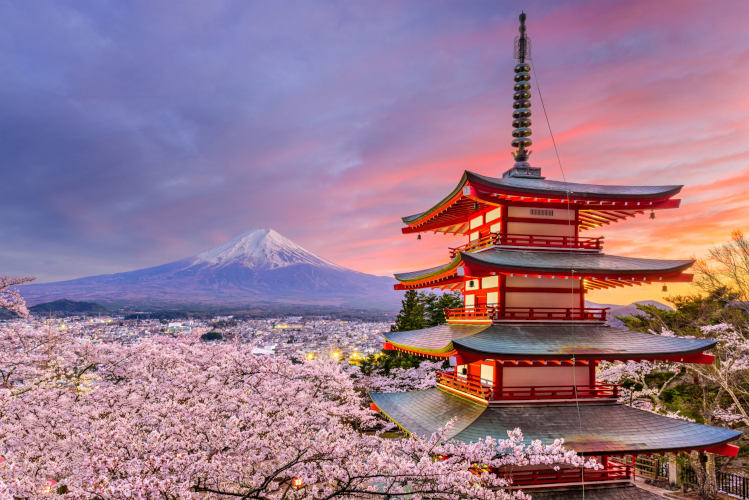

About Japan
Land Of The Rising Sun
Japan is well known in the west, despite being an island country sitting far to the east. It has a reputation for being a clean, beautiful place with natural wonders and rich culture and history. People see it as technologically advanced at the same time as being a place where ancient traditions and cultures are still being kept alive. This is all more-or-less true. However, why is it that everyone is aware of all of this? Why are people in the west so familiar with a string of islands so far away?
Why Does Everyone Like Japan?
Everyone in the west seems to be fond of Japan. Japanese iconography like ramen, cherry blossom trees, kimono, and tori gates are immediately recognizable, even to people who have never paid much attention to the country. Japanese culture has gradually soaked into the West, from the proliferation of Japanese media like anime and manga, to the increasing number of schools that are teaching its language. Simply put, Japan has that X-factor that people can’t find anywhere else. Part of it is people’s fascination with the exotic, but it goes deeper than that. Japan is simply unlike most other countries.
One-of-a-Kind Properties
Japan is even unique among most Asian countries. Some properties include:
- It is very old.
- Has remained mostly isolated for much of its history.
- Is situated on a vertical string of islands.
- Is wedged between four tectonic plates.
This has led to a wide diversity of climates, resources, cultures, ways of life, and indeed perspectives. It is less one unified country, and more a grouping of many diverse cultures that became one over a long period of time. All of these aspects have led to it having not just a unique identity, but having a little bit of everything.